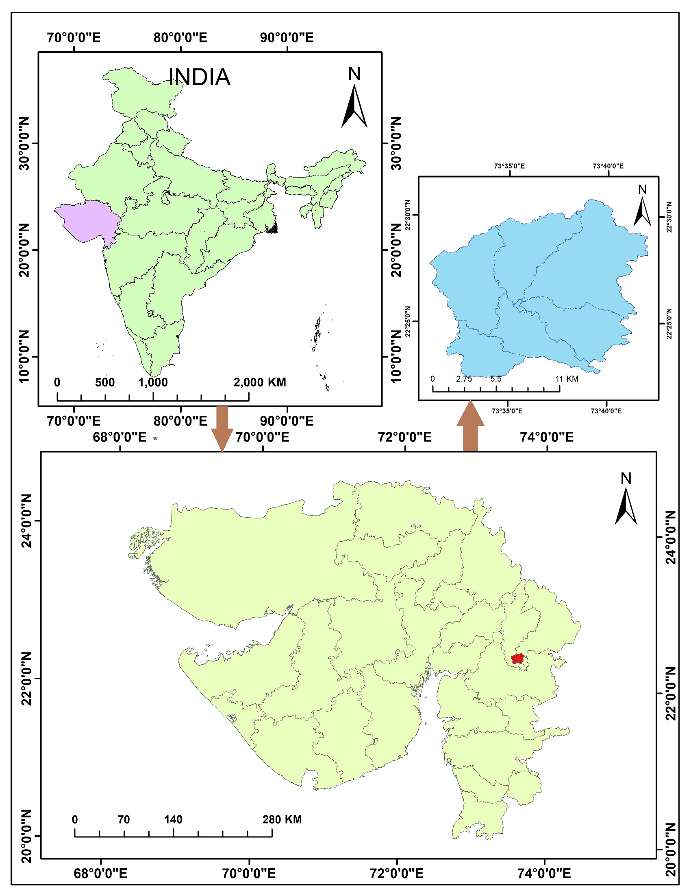

 The current research analyses the runoff response using Soil and Water Assessment Tool (SWAT) during rainfall incidents over the sub-basin of Deo River, Panch Mahal, Gujarat, India. The SWAT model is developed for the Deo river sub-basin having catchment area of 194.36 km2 , with 7 sub-basins comprising of 94 Hydrological Response Units (HRUs). Two rain gauge stations present in the study area (viz., Deo dam and Shivrajpur) werechosen to evaluate the efficiency of the SWAT model.
SWAT is a continuous daily deterministic time-step model used to assess land-management procedures in basins. ArcSWAT, which is embodied in ArcGIS, is a graphical user interface for SWAT (SOIL AND WATER ASSESSMENT TOOL) model. The actual aim of developing this model is to predict the impact of land management practices on water, runoff values in large complex watershed with varying soil, land use and management conditions over a long period of time.
Deo river is selected for the present study which flows in Dahod, Panch Mahals and Vadodara districts of Gujarat, India (Location shown in Map). Deo river is the right bank tributary of the Dhadhar river. Its other name is Dev river in the name of god. At 26 km distance Deo dam is located on Deo river having catchment area of 194.36 sq. km., which is selected as study area. The basin lies between 22° 22΄ N to 22° 31΄ N latitude and 73° 30΄ E to 73° 42΄ E longitude. The average annual precipitation is 1072 mm (42.21 inches) in the basin. The maximum average temperature felt here is of 39℃ in the month of May and the minimum average temperature of 13℃ for the month of February. The average annual wind speed recorded at the Deo dam weather station is 6.53 m/s.